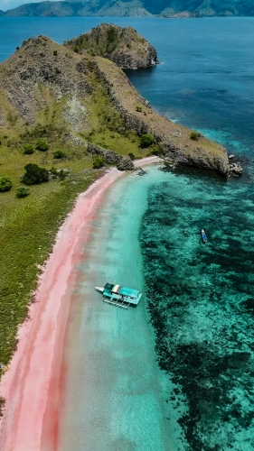
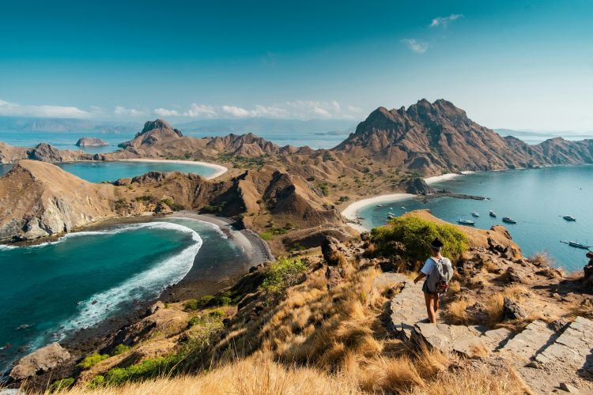
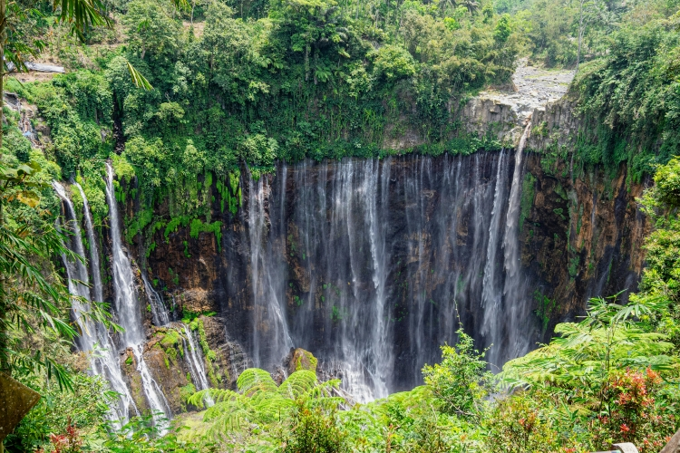
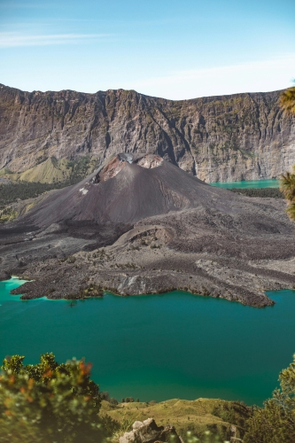

Home
“Nature in Indonesia is not scenery, it’s a living soul.”
Indonesia is home to some of the world’s most stunning beaches, where soft sand and clear blue water create perfect places to relax and explore marine life. Its mountains rise high across the islands, offering breathtaking views and challenging trails for adventurers. The country is also known for its beautiful waterfalls, from tall jungle cascades to hidden natural pools deep in the forest. Indonesia’s national parks protect these landscapes, allowing visitors to experience untouched nature, diverse wildlife, and the true beauty of the archipelago.



